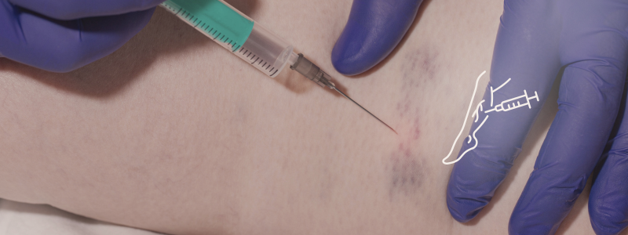

O que é?
A escleroterapia é um procedimento médico usado para tratar varizes
e vasinhos (telangiectasias) através da injeção de uma solução
esclerosante, líquido ou em espuma, diretamente nas veias afetadas. Essa solução causa inflamação na parede da veia,
levando ao seu fechamento e eventual desaparecimento.
O procedimento é minimamente invasivo e
geralmente bem tolerado pelos pacientes, com uma recuperação rápida.
Quando é indicada?
A escleroterapia é indicada para tratar vasinhos e varizes, especialmente quando
causam desconforto estético ou sintomas como dor, inchaço, sensação
de peso e coceira causados pelas varizes.
➡️ O procedimento também pode ser recomendado para prevenir
complicações como o sangramento de varizes rompidas ou úlceras de perna.
➡️ Pode ser usada em varizes finas, médias e até em veias safenas, dependendo da avaliação médica.
Contraindicações
Algumas contraindicações para realização de escleroterapia são:
➡️ Trombose venosa aguda (superficial ou profunda);
➡️ Gravidez: É recomendado adiar o tratamento até após o parto,
pois os agentes esclerosantes não têm aprovação para uso durante a gestação.
Telangiectasias, veias reticulares e pequenas varizes não axiais geralmente regridem
nos meses após o parto e não requerem tratamento imediato;
➡️ Diabetes e doença arterial periférica: Há um maior risco de
complicações em feridas. Deve-se avaliar a decisão com base na natureza e extensão da
escleroterapia e na presença de isquemia;
➡️ Histórico de enxaqueca e forame oval patente: Contraindicações
relativas para a escleroterapia com espuma devido ao risco de embolismo;
➡️ Alergias aos componentes do produto injetado.
Tipos de escleroterapia
Escleroterapia líquida
Utiliza uma solução esclerosante líquida para tratar vasinhos e varizes menores.
Escleroterapia com espuma
A solução esclerosante é misturada com ar para criar uma espuma, que é injetada nas veias, aumentando a eficácia.
➡️ Indicada para varizes maiores.
Escleroterapia com glicose
Usa glicose em alta concentração para lesar a veia, também eficaz em varizes finas e médias.
Escleroterapia a laser
Usa laser para aquecer e danificar a veia, causando seu fechamento.
Efeitos colaterais
➡️ Vermelhidão, inchaço, coceira e sensibilidade no local das injeções;
➡️ Formação de pequenos hematomas ou manchas escuras, que geralmente desaparecem com o tempo;
➡️ Reações alérgicas (raras).
Quando os resultados ficam visíveis?
Geralmente, são necessárias múltiplas sessões para alcançar o resultado desejado,
com um intervalo de cerca de seis semanas entre cada sessão,
e é recomendado retornar ao médico cerca de um mês após o tratamento para verificar
a evolução e planejar possíveis sessões adicionais.
➡️ Embora as veias tratadas não costumem voltar, novas varizes podem surgir em
outras áreas com o tempo.
Pequenas varizes e vasinhos
Os resultados iniciais podem ser observados entre 3 e 6 semanas após o procedimento.
Veias maiores
O tempo para resultados visíveis pode ser mais longo, chegando a 3 ou 4 meses.
Preparação para a escleroterapia
A preparação para escleroterapia envolve cuidados com medicamentos,
higiene e roupas:
➡️ É crucial informar o médico sobre todos os medicamentos que você usa, incluindo aqueles que podem aumentar o risco de sangramento, como aspirina, anticoagulantes e anti-inflamatórios.
➡️ Comunique ao médico qualquer alergia conhecida, especialmente a anestésicos locais, anestesia geral ou meios de contraste.
➡️ Evite o uso de cremes hidratantes e depilação nas pernas nas 24 horas anteriores à escleroterapia.
➡️ Use roupas confortáveis e largas, como shorts ou bermudas, no dia do procedimento, pois suas pernas podem ficar com curativos após a sessão.
➡️ Evite exposição solar prolongada e exercícios físicos intensos no dia anterior e após o procedimento.
➡️ É recomendado que você tenha alguém para te levar para casa após o procedimento.
Cuidados após a escleroterapia
Após a escleroterapia, é crucial seguir os cuidados recomendados pelo
médico para otimizar a recuperação e evitar complicações:
➡️ Caminhadas leves e regulares para estimular a circulação sanguínea e ajudar na recuperação.
➡️ O uso de meias de compressão para auxiliar na circulação sanguínea e reduzir o inchaço.
O tempo de uso pode variar de acordo com a orientação médica, mas geralmente é mantido por alguns
dias ou semanas após o procedimento.
➡️ Evitar a exposição direta ao sol nas áreas tratadas por algumas semanas, pois isso pode causar manchas na pele.
➡️ Em alguns casos, pode ser recomendado a aplicação de compressas frias ou mornas na região tratada para aliviar o desconforto e reduzir o inchaço.
➡️ É aconselhável evitar atividades físicas intensas e ficar muito tempo em pé ou sentado nas primeiras horas ou dias após o procedimento.
➡️ É fundamental comparecer às consultas de acompanhamento com o médico para avaliar a evolução do tratamento e fazer os ajustes necessários.
➡️ Pode ser fornecida outras orientações específicas com base no seu caso, como o uso de medicamentos tópicos ou orais, a necessidade de drenagem de eventuais coágulos, e outras medidas para otimizar a recuperação.
Benefícios
A escleroterapia oferece diversos benefícios, tanto estéticos quanto para a saúde.
➡️ A escleroterapia remove veias visíveis, proporcionando uma aparência mais agradável às pernas.
➡️ Reduz dor, inchaço, sensação de peso e queimação nas pernas causados por varizes.
➡️ Ao eliminar veias doentes, o sangue é desviado para veias saudáveis, melhorando a circulação sanguínea.
➡️ É possível tratar várias veias em uma única sessão.
➡️ A recuperação geralmente é rápida, permitindo que o paciente retome suas atividades diárias em pouco tempo.
➡️ A escleroterapia é um procedimento minimamente invasivo, realizado em consultório, sem necessidade de internação.
➡️ Em comparação com cirurgias, a escleroterapia pode apresentar um melhor custo-benefício, especialmente para casos selecionados.
Quer eliminar as varizes de forma segura e eficiente?
Agende sua sessão de escleroterapia conosco e conquiste pernas mais bonitas e saudáveis!
Entre em contato e marque sua avaliação hoje mesmo!
 Agende seu horário
Agende seu horário